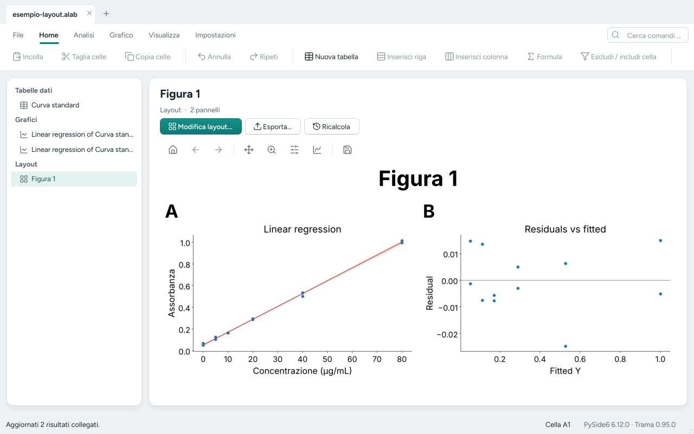
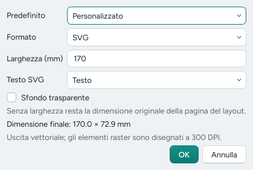
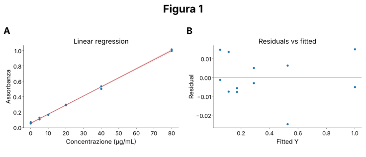
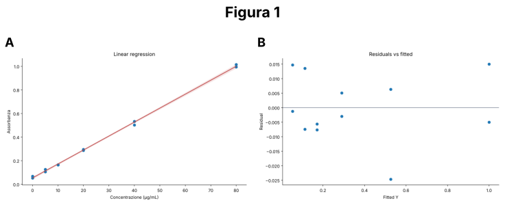

GuidaGrafici e reportExport vettoriale
Esportare una figura vettoriale
La rivista vuole la figura 1 in formato vettoriale, larga 170 mm, con i pannelli A e B. Come la esporti da Trama perché resti nitida a ogni ingrandimento, con un testo che si legge ancora una volta stampata?
- Verificato Trama 0.95.0 beta
- Dati la curva standard sintetica
- Larghezza 170 mm
- Lettura 7 minuti
Quando usarlo
Un file vettoriale (SVG, PDF) descrive linee, punti e testo come geometria: si ingrandisce senza perdere nitidezza e il testo resta testo. Un file raster (PNG, TIFF) è una griglia di pixel fissata al momento dell’esportazione: oltre la sua risoluzione si vedono gli scalini.
- Grafici, curve, schemi: vettoriale. È il caso di quasi tutto quello che esce da Trama.
- Fotografie e immagini al microscopio: raster, alla risoluzione chiesta dalla rivista.
- La larghezza finale si decide prima: molte riviste usano una colonna (circa 85 mm) o due (circa 170 mm). Controlla le istruzioni per gli autori, che indicano anche il corpo minimo del testo.
- Il corpo dei caratteri si controlla alla larghezza finale, non sullo schermo. È il caso limite di questo capitolo.
I dati
Gli standard sintetici del capitolo Curva standard: concentrazione e assorbanza. Il progetto contiene due grafici di Regressione lineare, la retta con la banda di confidenza e i residui contro i valori stimati, e il layout Figura 1 che li mette affiancati come pannelli A e B. I due grafici hanno già i caratteri ingranditi in Formato grafico; il perché è nel caso limite.


In Trama
- Apri il progetto con File → Apri… e seleziona il layout Figura 1 nel pannello a sinistra, sotto Layout.
- Scegli File → Esporta con opzioni…. Lo stesso comando è nella scheda Grafico.
- Imposta il formato e la larghezza come nella tabella qui sotto. La riga Dimensione finale mostra subito le misure della pagina: 170,0 × 72,9 mm.
- Premi OK e scegli nome e cartella del file.
- Per il PDF ripeti con Formato = PDF. Il predefinito Vettoriale imposta un PDF da 85 mm, cioè una colonna.
Mostra il layout nell’app


| Formato | SVG (poi PDF) |
|---|---|
| Larghezza (mm) | 170 |
| Testo SVG | Testo |
| Sfondo trasparente | no |
Controlla il file
Non fidarti dell’estensione: apri il file e controlla che sia davvero vettoriale. Sui file di questo esempio:

| SVG, Testo | SVG, Tracciati | ||
|---|---|---|---|
| Pagina | 170 × 72,9 mm | 170 × 72,9 mm | 170 × 72,9 mm, 1 pagina |
| Testo come testo | 33 elementi | nessuno | sì, cercabile |
| Immagini incorporate | nessuna | nessuna | nessuna |
| Dimensione | 25,2 kB | 51,8 kB | 24,5 kB |
Testo o tracciati. Con Testo le etichette restano testo: puoi correggerle in un editor vettoriale e cercarle nel file. Il file però indica una famiglia di caratteri, e su un computer che non la ha il programma ne sostituisce un’altra, con larghezze diverse. Con Tracciati ogni lettera diventa una forma: la figura è identica ovunque, ma il testo non si corregge più e il file pesa circa il doppio. Usa Testo finché la figura cambia, Tracciati per la versione finale se la rivista chiede di convertire i caratteri.
I caratteri predefiniti diventano di 4 punti
Lo stesso layout, con i caratteri predefiniti dei grafici, esportato a 170 mm. Il file è vettoriale e nitido, ma il testo dentro i pannelli è minuscolo: 4,0 punti per le etichette delle tacche e i titoli degli assi, 4,8 per il titolo del pannello. Succede perché il layout rimpicciolisce ogni grafico per farne stare due in una riga, e la larghezza di 170 mm rimpicciolisce di nuovo la pagina intera. Il titolo del layout e le lettere A e B, che stanno sulla pagina, restano a 9,6 e 11,2 punti.


Come rimediare. Seleziona ogni grafico del layout, apri Grafico → Formato grafico e, in Dimensioni dei caratteri in punti, aumenta Titolo, Titoli assi ed Etichette tacche. I valori sono riferiti al grafico da solo: in questo layout a due colonne e a 170 mm vengono moltiplicati per circa 0,4. Con 22, 20 e 18 il testo finale va da 7,2 a 8,9 punti.
Come accorgersene. Stampa la pagina al 100% o apri il PDF alla dimensione reale: se le etichette degli assi sono più piccole del testo di una nota a piè di pagina, sono troppo piccole. Il JSON dei controlli riporta il corpo effettivo di ogni testo nei due casi.
Cosa controllare prima di inviare
- Formato e larghezza richiesti dalla rivista, e la riga Dimensione finale che li conferma.
- Corpo del testo alla larghezza finale, nei pannelli e non solo nel titolo.
- Testo o tracciati, secondo le istruzioni per gli autori.
- Nessuna immagine raster nascosta: un layout importato con pannelli incorporati come immagini resta raster anche in SVG e PDF, e Trama lo dice nella finestra di esportazione.
- Il progetto
.alabda cui la figura si riesporta, se serve cambiarla.
Le figure sono state preparate in Trama 0.95.0 beta ed esportate in PDF vettoriale alla larghezza finale di 170 mm.
Fonti
- Rougier N. P., Droettboom M., Bourne P. E. (2014). Ten simple rules for better figures. PLoS Computational Biology, 10(9), e1003833. doi:10.1371/journal.pcbi.1003833
- W3C (2011). Scalable Vector Graphics (SVG) 1.1 (Second Edition). Raccomandazione W3C. w3.org/TR/SVG11
- ISO 32000-2:2020. Document management — Portable document format — Part 2: PDF 2.0. Organizzazione internazionale per la normazione.
Verificato con Trama 0.95.0 beta (tag v0.95.0, commit 4c07db6) il 20 novembre 2026. Esportazione in analisi/layout_svg.py e analisi/figure_export.py.